Every document task. Beautifully simple.
Convert PDFs, extract text, edit images and organize files in one thoughtfully designed toolkit. No complicated setup — just choose a tool and get things done.
From image to editable text.
Drop in a screenshot, photo or scan. Extract the words, make them yours, and export.
Let's get your text
Add a screenshot
Upload, paste, or capture your screen.
Your image is processed in your browser. It is not uploaded to our server.
Your extracted text
Review it, edit it, then export.
Every tool, ready when you are.
Choose what you need. Each tool has its own dedicated workspace and practical guide.

PDF to Word
Turn PDF text into a Word document you can edit and share.

PDF to Images
Export every page of a PDF as a crisp PNG image.

Images to PDF
Combine photos, screenshots and scans into a single PDF.

Merge PDFs
Join PDFs into one organized document, in the order you choose.

Split PDF
Save only the pages you need from a larger PDF.

Compress PDF
Reduce image-heavy PDF file size with adjustable quality.

JPG / PNG Converter
Switch image formats in seconds, including batch conversions.

Background Remover
Remove simple solid-color backgrounds with a manual color picker.

Batch Image to Text
Extract editable text from multiple images, one after another.

Scanner with Crop
Frame the important part of a document before text extraction.

QR Code Generator
Create a scannable QR code for a link or short message.
Image to Text (OCR)
Turn screenshots and scanned images into editable text.
Built for local workflows
File processing runs in the browser. Some engines load code and language resources from CDNs.
Simple by design
Focused, accessible workspaces with clear steps and feedback.
All your essentials
OCR, PDF conversion, image tools, cropping and QR codes in one place.
Works across devices
Responsive layouts for a laptop, tablet or mobile browser.
Practical guides.
Helpful explanations so you can choose the right tool and get better results.
How to Extract Text from an Image: A Practical Guide
Simple steps for turning screenshots, scanned pages and photos into editable text, plus OCR accuracy tips.
KNOWLEDGE BASE · GUIDEJPG vs PNG: Which Image Format Should You Use?
Compare image quality, transparency and file sizes to choose the right format for photographs or graphics.
KNOWLEDGE BASE · GUIDEHow to Combine Multiple Images into One PDF
A quick walkthrough for preparing document photos, ordering pages and exporting one convenient PDF.